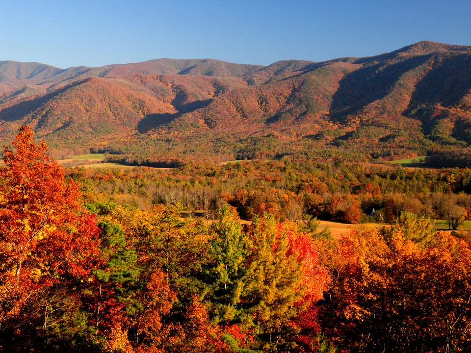

Near Gatlinburg · Quiet inn
Buckhorn Inn
A long-established country inn on a hillside outside Gatlinburg, close to the park but away from the crowds. Breakfast and mountain views.
Official details for Buckhorn InnBlue ridges, mountain inns and quiet trails.
America’s most visited national park is a short drive from the runway in Sevierville. Stay at a quiet inn near Gatlinburg or on the peaceful Townsend side, hike to a waterfall, drive the Cades Cove loop at dawn, and splurge, if you like, on one of the country’s most celebrated country hotels.

In our plane it’s a short flight.
Where we’re staying Dinner Things to do The plan
I’ll handle the flight planning; you handle the fun planning!
Time illustration: direct distance at 150 KTAS plus 15 minutes for departure and arrival, matching the discovery page. Use ForeFlight for your actual flight plan.
Check the weekend weather at both ends → Flight category, your minimums and the crosswind on the best runway.
Checked Nov 2026. Crew cars and pilot perks change often: call the FBO before you go. How to have a rental car waiting at the FBO · Know something we missed? Tell us.
KGKT, Gatlinburg-Pigeon Forge Airport, is in Sevierville, about 30 minutes from Gatlinburg and the park entrance. For Blackberry Farm and Townsend, Knoxville’s McGhee Tyson (KTYS) is closer.
134 Air Museum Way, Sevierville, TN 37862
Recent pilot reports (2025–26) mention a courtesy car for short trips; call ahead. For the weekend, an Enterprise rental desk serves the airport; call the local office ahead and the car can be waiting at the airplane. Recent reviews mention a new runway and FBO building. Ask about two-night parking and fees. No live fuel price is shown.
The Great Smoky Mountains rise above 6,000 feet just south of the field. Review terrain, density altitude in summer, the sectional and current NOTAMs, and plan around mountain weather and low clouds.
Gatlinburg is lively and close to the main park road; Townsend, the “peaceful side,” is quieter and near Cades Cove. Rates and availability need travel dates.
A long-established country inn on a hillside outside Gatlinburg, close to the park but away from the crowds. Breakfast and mountain views.
Official details for Buckhorn InnRooms with private balconies over a mountain stream, a short walk from downtown Gatlinburg. Ask for a king suite with a fireplace.
Official details for Old Creek LodgeA romantic lodge and cabins, many with hot tubs, on the quiet side of the Smokies, with its own Appalachian bistro.
Official details for Dancing Bear LodgeOne of America’s most celebrated country hotels, in the foothills near Townsend, known for its food, wine and service. About 25 minutes from KTYS. A once-in-a-lifetime splurge.
Official details for Blackberry FarmBlackberry Farm’s sister resort on a mountain preserve, with stone cottages, hiking and wellness at its heart.
Official details for Blackberry MountainPrices and availability for your dates, through our partner Stay22. This is an affiliate link: we may earn a commission at no cost to you. The picks above are never paid.
Mountain dining is casual. Reserve where you can, and pack a picnic for the park.
A long-running Gatlinburg favorite in a log building beside the river, where you choose your steak cut at the table.
Official details for The Peddler SteakhouseSeasonal mountain cooking at Dancing Bear Lodge in Townsend. Reserve ahead.
Official details for Dancing Bear Appalachian BistroPick up subs and sandwiches at J.O.E. and Pop’s Sub Shoppe in Gatlinburg, then eat in the meadows of Cades Cove or beside a stream. Many couples say it is the best meal of the weekend.
J.O.E. and Pop’s Sub Shoppe for A picnic in Cades CoveStart early; the park is busiest from late morning.
An 11-mile one-way loop through a mountain valley of meadows, historic cabins and churches, with deer and often black bears. Go at sunrise to beat the traffic.
Park informationDrive over the crest of the Smokies to Newfound Gap, then on to Kuwohi (formerly Clingmans Dome), the park’s highest point, for a short, steep walk to the observation tower. Check road status in winter.
Choose your effort: Laurel Falls is a short paved walk, Grotto Falls lets you walk behind the water, and Alum Cave is a longer climb to dramatic views.
The Great Smoky Arts & Crafts Community outside Gatlinburg has dozens of working studios along an eight-mile loop: pottery, woodwork, brooms and quilts.
Dolly Parton’s theme park in Pigeon Forge, known for its mountain setting, crafts and seasonal festivals. A fun day if the weather turns.
This prototype links to the park and town calendars. It does not yet match events to your travel dates.
Fireflies flash in unison at Elkmont for about two weeks. Viewing is by lottery; apply in spring.
Peak color moves down the mountains through October. Beautiful and very busy; book early.
Millions of holiday lights across Gatlinburg, Pigeon Forge and Sevierville. Quieter trails, too.
Check the town calendar when choosing a weekend, and confirm dates and tickets with the organizer.
A sample Friday–Sunday weekend: an inn, a sunrise drive and a waterfall. No bookings or availability confirmed.
Land at KGKT early and pick up the rental car.
A short waterfall walk at Laurel Falls and a picnic in the park.
Browse the arts and crafts loop, then fly out before mountain afternoon weather.
Land at KGKT, subject to weather and your actual flight plan, and pick up the rental car.
Drive to your inn, then wander the arts and crafts loop.
Dinner at The Peddler.
Drive the Cades Cove loop while the wildlife is out.
A picnic, then a waterfall hike.
Dinner at Dancing Bear Appalachian Bistro in Townsend.
A slow breakfast and a drive to Newfound Gap, if clouds allow.
Return the car and allow time at the FBO.
Mountain clouds can linger in the morning; let weather set the departure.
The Alum Cave trail, or Grotto Falls.
Dollywood, or a long lunch at Blackberry Farm.
Sunset from Newfound Gap, if the road is open.
These details make the difference between an appealing list and a usable getaway.
Rental car and lodging first, then dinners.
Required to park in the national park for more than 15 minutes. Buy one online or at a visitor center.
Summer weekends and October are very busy. Start early and avoid Gatlinburg’s main strip at peak times.
High terrain, haze and quick-building storms. Fly in the morning and keep a backup day.
Picks and links reviewed by WingAway Weekends. Hours, prices, menus and availability change often, so confirm directly with each place before booking. Spotted something out of date, or have a favorite we missed? Email us at hello@wingawayweekends.com.
WingAway Weekends helps you discover the destination. Use ForeFlight and current official aviation information for route, performance, weather, NOTAMs and preflight decisions. Flight planning and PIC responsibility stay with the pilot.